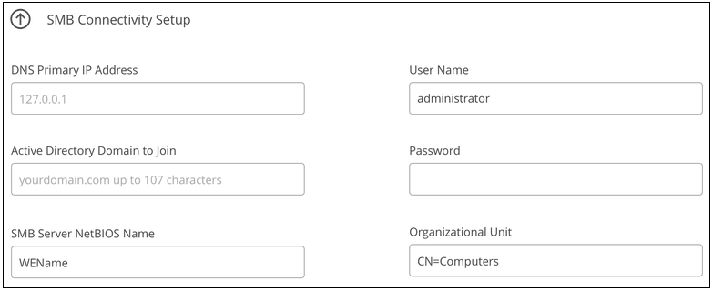
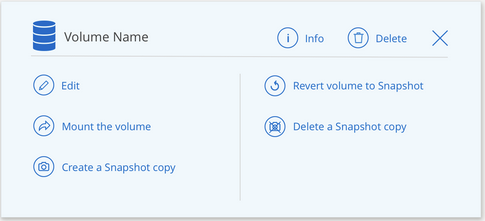

要求變更文件
要求變更文件 編輯此頁面
編輯此頁面 瞭解如何作出貢獻
瞭解如何作出貢獻管理 Cloud Volumes Service AWS 的功能
Cloud Manager 可讓您根據建立雲端磁碟區 "AWS 適用的 Cloud Volumes Service" 訂購：您也可以探索 Cloud Volumes Service 已從該解決方案介面建立的雲端磁碟區、並將其新增至工作環境。

|
隨之推出 "Amazon FSX for ONTAP Sf"、您不再可以在Cloud Manager中為AWS工作環境建立新的CVS。不過、如果您先前已將CVS for AWS工作環境新增至Cloud Manager、則可以繼續建立及管理磁碟區。 |
建立雲端磁碟區
對於 Cloud Volumes Service 已存在於整個作業環境中的磁碟區組態、您可以使用下列步驟來新增磁碟區。
若組態不存在磁碟區、您可以在 Cloud Volumes Service 設定 for AWS 訂閱後、直接從 Cloud Manager 建立第一個磁碟區。過去、第一個 Volume 必須直接在 Cloud Volumes Service 這個使用者介面中建立。
-
如果您想在 AWS 中使用 SMB 、則必須設定 DNS 和 Active Directory 。
-
規劃建立 SMB Volume 時、您必須擁有可連線的 Windows Active Directory 伺服器。建立磁碟區時、您將輸入此資訊。此外、請確定管理使用者能夠在指定的組織單位（ OU ）路徑中建立機器帳戶。
-
在新的區域 / 工作環境中建立第一個 Volume 時、您將需要這些資訊：
-
AWS 帳戶 ID ： 12 位數的 Amazon 帳戶識別碼、不含破折號。若要尋找您的帳戶 ID 、請參閱此資訊 "AWS 主題"。
-
無類網域間路由（ CIDR ）區塊：未使用的 IPV4 CIDR 區塊。網路前置碼必須介於 /16 和 /28 之間、而且必須位於專為私有網路保留的範圍內（ RFC 1918 ）。請勿選擇與 VPC CIDR 配置重疊的網路。
-
-
選取適用於AWS工作環境的CVS、然後按一下「*新增Volume *」。

-
如果您要將第一個磁碟區新增至該區域的工作環境、則必須新增 AWS 網路資訊。
-
輸入該地區的 IPV4 範圍（ CIDR ）。
-
輸入 12 位數的 AWS 帳戶 ID （不含破折號）、將 Cloud Volumes 帳戶連線至 AWS 帳戶。
-
按一下 * 繼續 * 。

-
-
「接受虛擬介面」頁面說明新增磁碟區之後、您需要執行的一些步驟、以便準備完成該步驟。只要再按一次 * 繼續 * 即可。
-
在「詳細資料與標籤」頁面中、輸入有關磁碟區的詳細資料：
-
輸入磁碟區名稱。
-
指定介於 100 GiB 到 9 、 000 GiB （相當於 88 Tibs ）之間的大小。
-
指定服務層級： Standard 、 Premium 或 Extreme 。
-
視需要輸入一或多個標記名稱、以便將磁碟區分類。
-
按一下 * 繼續 * 。

-
-
在「傳輸協定」頁面中、選取「 NFS 」、「 SMB 」或「雙通訊協定」、然後定義詳細資料。NFS 和 SMB 的必要項目如下所示。
-
在 Volume Path （磁碟區路徑）欄位中、指定掛載磁碟區時所看到的磁碟區匯出名稱。
-
如果您選取「雙通訊協定」、可以選取 NTFS 或 UNIX 來選取安全樣式。安全性樣式會影響所使用的檔案權限類型、以及如何修改權限。
-
UNIX 使用 NFSv3 模式位元、只有 NFS 用戶端可以修改權限。
-
NTFS 使用 NTFS ACL 、只有 SMB 用戶端可以修改權限。
-
-
NFS ：
-
在「 NFS 版本」欄位中、根據您的需求選取 NFSv3 、 NFSv4.1 或兩者。
-
您也可以建立匯出原則、以識別可存取磁碟區的用戶端。指定：
-
使用 IP 位址或無類別網域間路由（ CIDR ）的允許用戶端。
-
讀寫或唯讀的存取權限。
-
存取傳輸協定（若 Volume 允許 NFSv3 和 NFSSv4.1 存取）、則為使用者所使用的傳輸協定。
-
若要定義其他匯出原則規則、請按一下「 * + 新增匯出原則規則 * 」。
下圖顯示為 NFS 傳輸協定填寫的 Volume （磁碟區）頁面：
-

-
-
中小企業：
-
您可以勾選 SMB 傳輸協定加密方塊、啟用 SMB 工作階段加密。
-
您可以填寫 Active Directory 區段中的欄位、將磁碟區與現有的 Windows Active Directory 伺服器整合：
欄位 說明 DNS 主要 IP 位址
提供 SMB 伺服器名稱解析的 DNS 伺服器 IP 位址。當參考多個伺服器時、請使用逗號分隔 IP 位址、例如 172.31.25.223 、 172.31.2.74 。
要加入的 Active Directory 網域
您要 SMB 伺服器加入之 Active Directory （ AD ）網域的 FQDN 。使用 AWS 託管 Microsoft AD 時、請使用「目錄 DNS 名稱」欄位中的值。
SMB 伺服器的 NetBios 名稱
要建立之 SMB 伺服器的 NetBios 名稱。
授權加入網域的認證資料
具有足夠權限的 Windows 帳戶名稱和密碼、可將電腦新增至 AD 網域內的指定組織單位（ OU ）。
組織單位
AD 網域中與 SMB 伺服器相關聯的組織單位。預設值為「 CN= 電腦」、用於連線至您自己的 Windows Active Directory 伺服器。如果您將 AWS 託管 Microsoft AD 設定為 Cloud Volumes Service 執行此動作的 AD 伺服器、您應該在此欄位中輸入 * OID=computers,O=corp* 。
下圖顯示 SMB 傳輸協定的「 Volume 」（磁碟區）頁面：


您應該遵循 AWS 安全群組設定的指引、讓雲端磁碟區能夠正確地與 Windows Active Directory 伺服器整合。請參閱 "適用於 Windows AD 伺服器的 AWS 安全性群組設定" 以取得更多資訊。 -
-
在「 Volume from Snapshot 」（從 Snapshot 建立磁碟區）頁面中、如果您想要根據現有磁碟區的快照建立此磁碟區、請從 Snapshot Name （快照名稱）下拉式清單中選取快照。
-
在「 Snapshot Policy 」（ Snapshot 原則）頁面中、 Cloud Volumes Service 您可以根據排程來啟用「支援功能」、以建立磁碟區的 Snapshot 複本。您可以立即執行此動作、或稍後再編輯磁碟區以定義快照原則。
請參閱 "建立快照原則" 以取得有關 Snapshot 功能的詳細資訊。
-
按一下 * 新增 Volume * 。
新磁碟區會新增至工作環境。
如果這是此 AWS 訂閱所建立的第一個磁碟區、您需要啟動 AWS 管理主控台、以接受此 AWS 區域將使用的兩個虛擬介面來連接所有雲端磁碟區。請參閱 "NetApp Cloud Volumes Service 《 AWS 帳戶設定指南》" 以取得詳細資料。
您必須在按一下「 * 新增 Volume * 」按鈕 10 分鐘內接受介面、否則系統可能會逾時。如果發生這種情況、請寄送電子郵件至 cvs-support@netapp.com 、附上您的 AWS 客戶 ID 和 NetApp 序號。支援部門將會修正此問題、您可以重新啟動就職程序。
然後繼續 "掛載雲端 Volume"。
掛載雲端磁碟區
您可以將雲端磁碟區掛載至 AWS 執行個體。雲端磁碟區目前支援適用於 Linux 和 UNIX 用戶端的 NFSv3 和 NFSv4.1 、以及適用於 Windows 用戶端的 SMB 3.0 和 3.1.1 。
-
附註： * 請使用您用戶端所支援的反白傳輸協定 / 方言。
-
開啟工作環境。
-
將游標移到磁碟區上、然後按一下 * 掛載磁碟區 * 。
NFS 和 SMB 磁碟區會顯示該傳輸協定的掛載指示。雙傳輸協定磁碟區提供兩組指令。
-
將游標暫留在命令上、然後將其複製到剪貼簿、以簡化此程序。只要在命令結尾處新增目的地目錄 / 掛載點即可。
-
NFS 範例： *

「 rsize 」和「 wsize 」選項所定義的最大 I/O 大小為 1048576 、不過對於大多數使用案例、建議使用 65536 。
請注意、 Linux 用戶端預設為 NFSv4.1 、除非使用「 VERRS=<NFS_VERON>> 」選項指定版本。
-
中小企業範例： *

-
-
使用 SSH 或 RDP 用戶端連線至 Amazon Elastic Compute Cloud （ EC2 ）執行個體、然後依照執行個體的掛載指示進行。
完成掛載指示中的步驟之後、您已成功將雲端磁碟區掛載至 AWS 執行個體。
管理現有磁碟區
您可以在儲存需求變更時管理現有的磁碟區。您可以檢視、編輯、還原及刪除磁碟區。
-
開啟工作環境。
-
將游標暫留在磁碟區上。

-
管理您的磁碟區：
工作 行動 檢視磁碟區的相關資訊
選取磁碟區、然後按一下「 * 資訊 * 」。
編輯磁碟區（包括 Snapshot 原則）
-
選取磁碟區、然後按一下 * 編輯 * 。
-
修改磁碟區的內容、然後按一下 * 更新 * 。
取得 NFS 或 SMB 掛載命令
-
選取磁碟區、然後按一下 * 掛載磁碟區 * 。
-
按一下 * 複製 * 以複製命令。
隨需建立 Snapshot 複本
-
選取一個磁碟區、然後按一下 * 「 Create a Snapshot Copy* （建立 Snapshot 複本 * ）」。
-
如有必要、請變更快照名稱、然後按一下「 * 建立 * 」。
將磁碟區更換為 Snapshot 複本的內容
-
選取一個磁碟區、然後按一下 * 將磁碟區還原為 Snapshot * 。
-
選取 Snapshot 複本、然後按一下 * Revert * 。
刪除 Snapshot 複本
-
選取磁碟區、然後按一下 * 刪除 Snapshot 複本 * 。
-
選取您要刪除的 Snapshot 複本、然後按一下 * 刪除 * 。
-
再按一下 * 刪除 * 以確認。
刪除 Volume
-
從所有用戶端卸載 Volume ：
-
在 Linux 用戶端上、請使用「 umount 」命令。
-
在 Windows 用戶端上、按一下 * 中斷網路磁碟機 * 。
-
-
選取磁碟區、然後按一下 * 刪除 * 。
-
再按一下 * 刪除 * 以確認。
-
從 Cloud Volumes Service Cloud Manager 移除
您可以從 Cloud Volumes Service Cloud Manager 移除適用於 AWS 訂閱的功能、以及所有現有磁碟區。磁碟區不會刪除、只會從 Cloud Manager 介面移除。
-
開啟工作環境。

-
按一下
 按一下頁面頂端的按鈕、然後按一下「 * 移除 Cloud Volumes Service 此功能 * 」。
按一下頁面頂端的按鈕、然後按一下「 * 移除 Cloud Volumes Service 此功能 * 」。 -
在確認對話方塊中、按一下 * 移除 * 。
管理 Active Directory 組態
如果您變更 DNS 伺服器或 Active Directory 網域、則需要修改 Cloud Volumes Services 中的 SMB 伺服器、以便伺服器繼續為用戶端提供儲存設備。
如果您不再需要 Active Directory 連結、也可以刪除該連結。
-
開啟工作環境。
-
按一下
按鈕、然後按一下 * 管理 Active Directory * 。 -
如果未設定 Active Directory 、您可以立即新增一個 Active Directory 。如果已設定、您可以使用修改或刪除設定
按鈕。 -
指定您要加入的 Active Directory 設定：
欄位 說明 DNS 主要 IP 位址
提供 SMB 伺服器名稱解析的 DNS 伺服器 IP 位址。當參考多個伺服器時、請使用逗號分隔 IP 位址、例如 172.31.25.223 、 172.31.2.74 。
要加入的 Active Directory 網域
您要 SMB 伺服器加入之 Active Directory （ AD ）網域的 FQDN 。使用 AWS 託管 Microsoft AD 時、請使用「目錄 DNS 名稱」欄位中的值。
SMB 伺服器的 NetBios 名稱
要建立之 SMB 伺服器的 NetBios 名稱。
授權加入網域的認證資料
具有足夠權限的 Windows 帳戶名稱和密碼、可將電腦新增至 AD 網域內的指定組織單位（ OU ）。
組織單位
AD 網域中與 SMB 伺服器相關聯的組織單位。預設值為「 CN= 電腦」、用於連線至您自己的 Windows Active Directory 伺服器。如果您將 AWS 託管 Microsoft AD 設定為 Cloud Volumes Service 執行此動作的 AD 伺服器、您應該在此欄位中輸入 * OID=computers,O=corp* 。
-
按一下「 * 儲存 * 」以儲存您的設定。